Building an AI demo, Part 2: Customizing inputs and outputs
In our last section we got a Gradio demo working on Hugging Face Spaces. Our demo took a sentence, ran it through a zero-shot text classification model, and let us know what category the sentence belongs to.
We didn’t love how it displayed the output, though, so in this chapter we’re going to start tweaking the inputs and outputs to get something more useful. Along the way we’ll also incorporate other models beyond the text classification one.
The starting point
Instead of our demo giving us a nice simple category for our text, we get a big mess of Python. Our user could dig through it to see that the model says there’s a 98% chance it’s about gun control, but… it just doesn’t look nice.
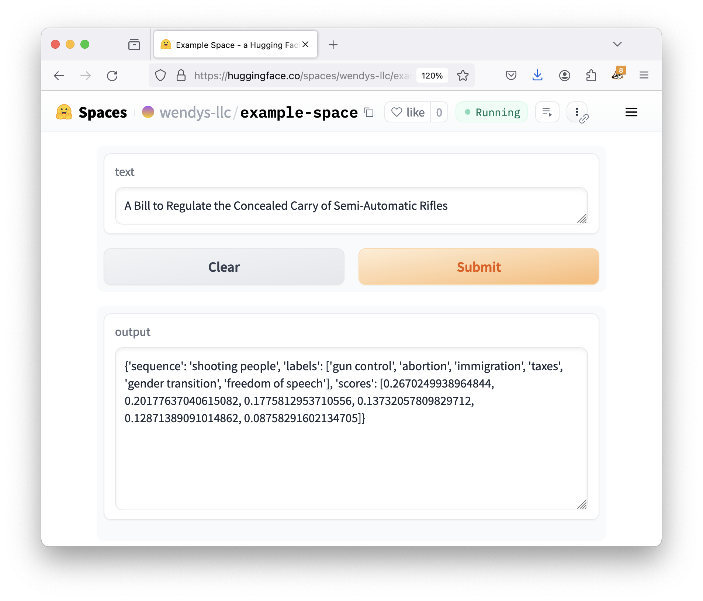
Let’s fix things up! Here’s our current code:
import gradio as gr
from transformers import pipeline
classifier = pipeline("zero-shot-classification",
model="facebook/bart-large-mnli")
def do_action(text):
candidate_labels = ['gun control', 'abortion', 'gender transition', 'freedom of speech', 'immigration', 'taxes']
result = classifier(text, candidate_labels)
return result
iface = gr.Interface(fn=do_action, inputs="text", outputs="text")
iface.launch()The second-to-last line is the important one here, where it sets up an interface that takes text as input as returns texts as output. If we want to make our app nicer, we have two options:
- Just give the category, not the whole Python thingie, or
- Switch away from using a simple text output.
For completeness’s sake, let’s try both!
Manipulating model output
Right now the result being displayed is the Python dictionary:
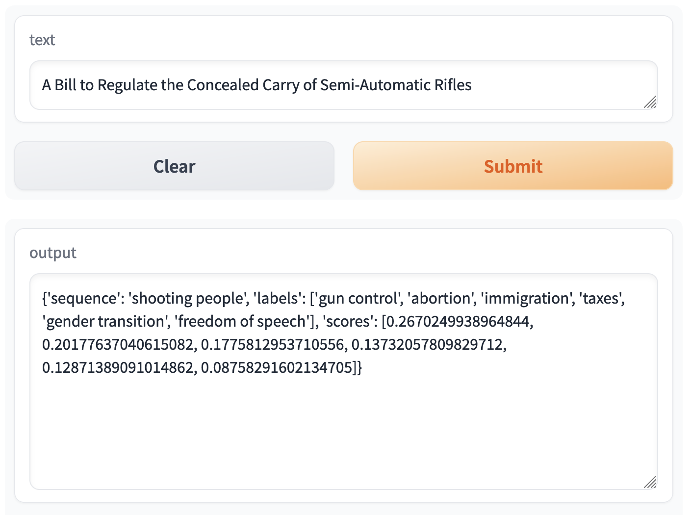
Here’s the cleaned-up output:
{
'sequence': 'A Bill to Regulate the Concealed Carry of Semi-Automatic Rifles',
'labels': ['gun control', 'gender transition', 'immigration', 'freedom of speech', 'taxes', 'abortion'],
'scores': [0.9809654951095581, 0.005819385405629873, 0.004202318377792835, 0.00334513490088284, 0.003268328495323658, 0.002399460645392537]
}If we were writing “regular” Python, we could see the predicted label by asking for the labels, then getting the first item in the list.
Gradio is no different! All of the code inside of do_action is just normal Python. If we just want the first label, let’s just ask for the first label:
import gradio as gr
from transformers import pipeline
classifier = pipeline("zero-shot-classification",
model="facebook/bart-large-mnli")
def do_action(text):
candidate_labels = ['gun control', 'abortion', 'gender transition', 'freedom of speech', 'immigration', 'taxes']
result = classifier(text, candidate_labels)
return result['labels'][0]
iface = gr.Interface(fn=do_action, inputs="text", outputs="text")
iface.launch()Not the best Python programmer? Don’t worry! Later on in the guide we’ll look at how to use tools like ChatGPT to solve these types of data-wrangling problems.
So we edit our app.py, saveit , wait for the rebuild, send it our new data… and it works great!
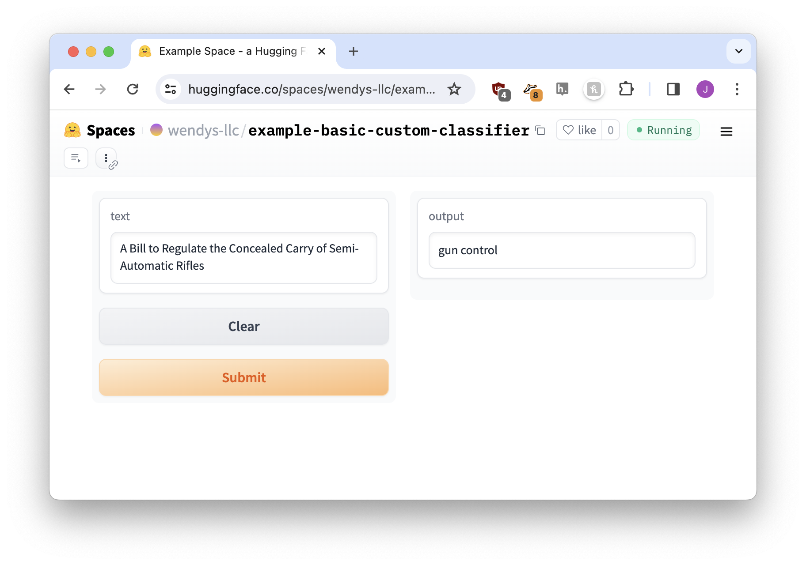
No matter how fancy AI might feel or the demo might look, all of the code inside of the do_action function is just normal Python. Anything we can think of can be sent back and displayed by the demo as long as we return it!
To take things even further, we could also change the output to be an entire sentence. If we leverage f-strings to do a little “fill-in-the-blanks” for us…
# Get the result
result = classifier(text, candidate_labels)
# Convert to a sentence
sentence = f"{result['labels'][0]} with a score of {result['scores'][0]:.02%}"
return sentence…again, works great!
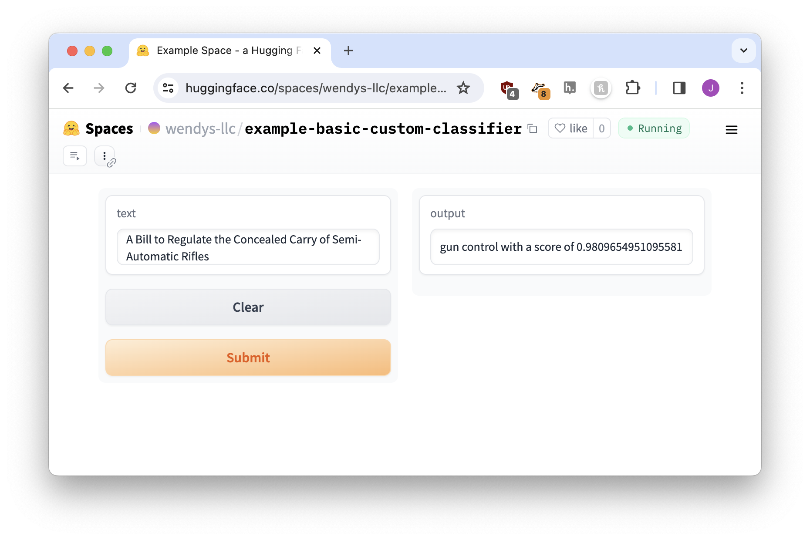
Choosing different outputs
So far we’ve only used text as output, but Gradio supports a ton of other options! If we browse through the full list of components we’ll see annotated images, 3D images, audio players, and plenty more.
It isn’t always easy to know what type of Gradio component might be appropriate in each situation, but there’s a great one for this instance: a Label! It will allow us to present a series of ranked labels with scores for each.
Labels look like this:
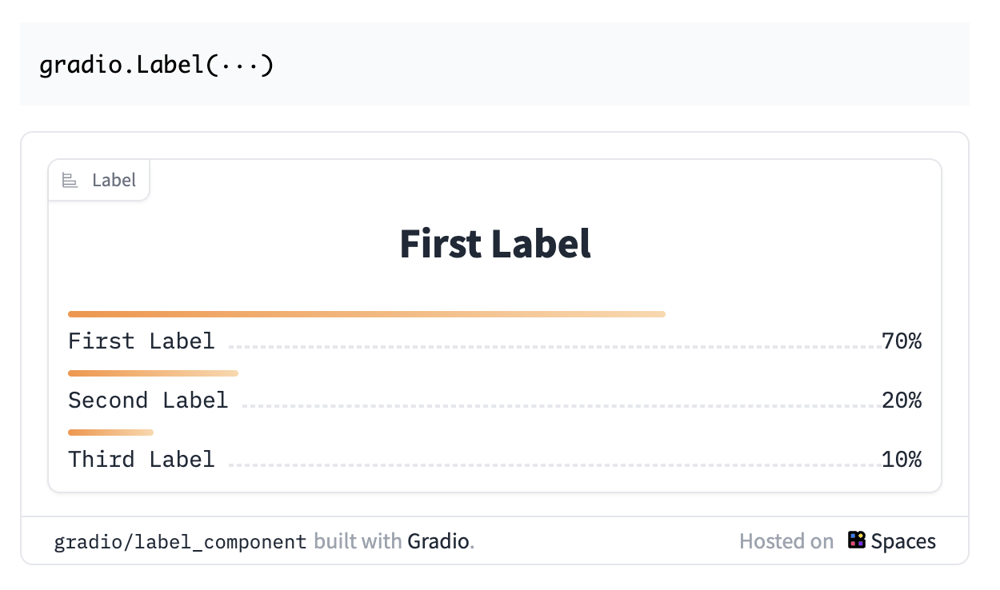
If we to use the label component as the way we display our output, a good way to start is to change outputs="text" to outputs="label". It probably won’t work automatically, but we’ll change it, save it, and see.
Note that this example does not use the sentence code we wrote in the last step. We’re back to boring, basic return result.
Our full code now looks like this, changes highlighted:
import gradio as gr
from transformers import pipeline
classifier = pipeline("zero-shot-classification",
model="facebook/bart-large-mnli")
def do_action(text):
candidate_labels = ['gun control', 'abortion', 'gender transition', 'freedom of speech', 'immigration', 'taxes']
result = classifier(text, candidate_labels)
return result
iface = gr.Interface(fn=do_action, inputs="text", outputs="label")
iface.launch()Everything looks good… until we click Submit on our sentence! When we do, we’re confronted with a big red Error on the output.
TODO Change image below to be the error showing up, not the logs.
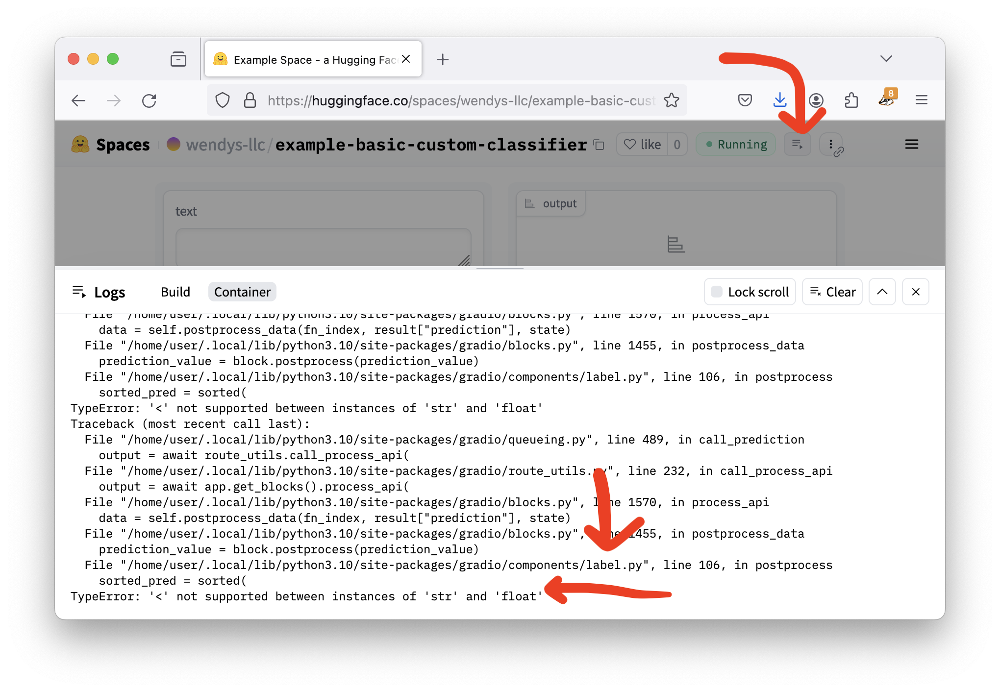
To double-check what went wrong, we can open up the logs.
The error message is long and confusing, but remember that the only change we made was what the output was. If that’s the only change you make and you get an error, the cause of the errors is always the same thing: we need to reformat our data to work with the label output.
To understand what’s missing, we read through the Gradio Label documentation, paying special attention to the As output note.
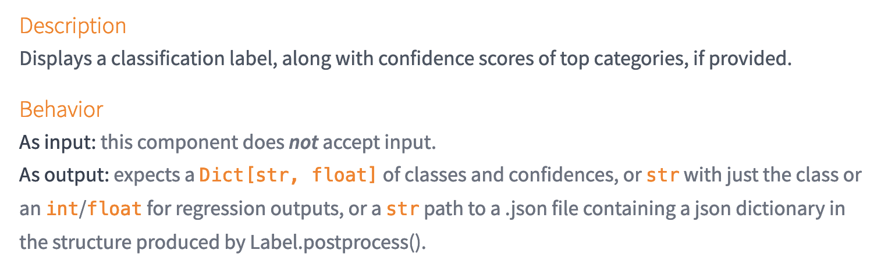
These description aren’t always as explainable as we’d like! But what expects a Dict[str, float] of classes and confidences means is that the label wants this:
{
'gun control': 0.965,
'immigration': 0.022,
'taxes': 0.001
}How do we switch our data data? Rearranging data to a specific format can be a real pain, so I just asked ChatGPT to do it for me.
Any time you are trying to get your data into a specific format for a Gradio demo, a three-step process can usually get you there without too much trouble:
- Use a
textoutput to see what the “normal” output of the model looks like - Copy the “As output” description from the document
- Paste them both into ChatGPT to get your answer
Let’s update our code with ChatGPT’s suggestion.
import gradio as gr
from transformers import pipeline
classifier = pipeline("zero-shot-classification",
model="facebook/bart-large-mnli")
def do_action(text):
candidate_labels = ['gun control', 'abortion', 'gender transition', 'freedom of speech', 'immigration', 'taxes']
result = classifier(text, candidate_labels)
result = dict(zip(result['labels'], result['scores']))
return result
iface = gr.Interface(fn=do_action, inputs="text", outputs="label")
iface.launch()And now we give it a try…
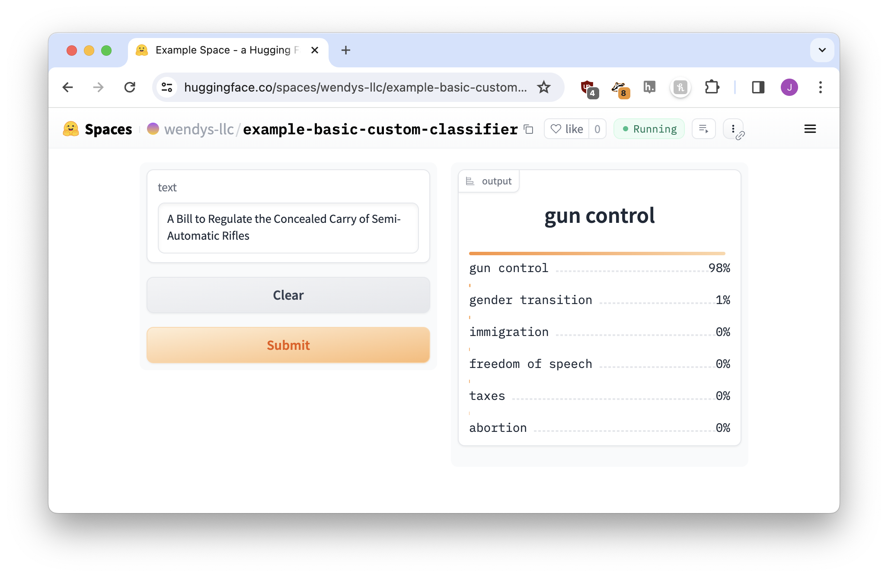
Perfect!
Exercise: Trying a similar model
Let’s see how our newfound skills extend to a different model! In this case we’ll use papluca/xlm-roberta-base-language-detection, which is used to detect the language of a piece of text.
It should be an easy enough adaptation because the display will very similar to our bill categorization demo: we’ll have a ranking of different languages, along with a score for each.
Step 1: Find the pipeline snippet
First, we’ll browse the model page to find the snippet of code that uses pipeline.
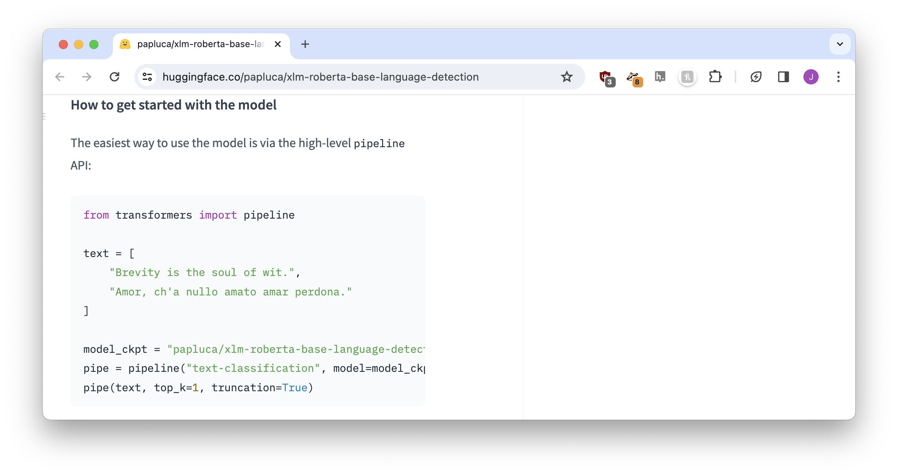
If we simplify it a little, the code ends up looking like this:
pipe = pipeline("text-classification", model="papluca/xlm-roberta-base-language-detection")
pipe(text, top_k=10)The original code had top_k=1, which means “only return the top predicted result.” That seemed boring, so we moved it up to ten! You can also use return_all_scores=True if you don’t want to pick a number.1
Step 2: Build the base app
Now we’ll combine the pipeline code with a Gradio interface. It doesn’t matter whether we start from the template from the last chapter or edit the bill classifier above, we just need to pay attention to two things:
- Make sure you
returnthe result - The interface output needs to be a
text
Our basic app code is here:
import gradio as gr
from transformers import pipeline
pipe = pipeline("text-classification", model="papluca/xlm-roberta-base-language-detection")
def do_action(text):
result = pipe(text, top_k=10)
return result
iface = gr.Interface(fn=do_action, inputs="text", outputs="text")
iface.launch()The major changes from our original code are highlighted. They’re pretty much cut-and-paste from the example pipeline snippet!
You’re welcome to build a new Hugging Face Space, just remember to add your requirements.txt like we did in the last chapter!
Step 3: Run the app to get the data format
Now we’ll try it out with I'm a potato named George Washington.
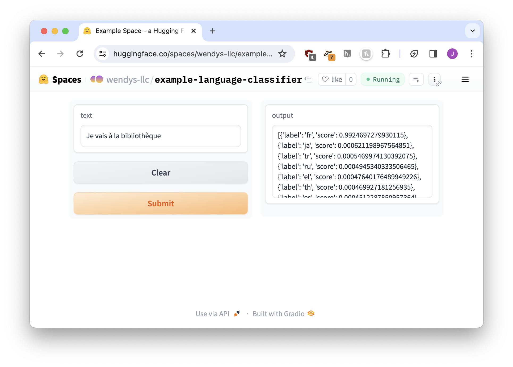
It doesn’t look great, but if we look at a list of language codes, we can figure out that the model is kind of sure it’s English. But what the model predicts isn’t important right now: we just want to convert the result to a label-supported format.
Step 4: Switch to a label
Now that we know what the default output looks like we can swap it for a label component. Our current output looks like this:
[{'label': 'en', 'score': 0.7135918140411377}, {'label': 'sw', 'score': 0.044559694826602936}, {'label': 'it', 'score': 0.04032188653945923}, {'label': 'ur', 'score': 0.03387092426419258}, {'label': 'pt', 'score': 0.026949740946292877}, {'label': 'nl', 'score': 0.023431390523910522}, {'label': 'tr', 'score': 0.023066097870469093}, {'label': 'el', 'score': 0.013108646497130394}, {'label': 'ru', 'score': 0.012918934226036072}, {'label': 'pl', 'score': 0.012245920486748219}]The label needs the same thing as last time – according to the docs it’s “a Dict[str, float] of classes and confidences.” We can go through an identical process to what we did with our bill classifier:
- Use ChatGPT to get the snippet to reformat our result.
- Change the interface output to be for a
label
After the changes the code looks like this:
import gradio as gr
from transformers import pipeline
pipe = pipeline("text-classification", model="papluca/xlm-roberta-base-language-detection")
def do_action(text):
result = pipe(text, top_k=10)
# Reformat our result
result = {item['label']: item['score'] for item in result}
return result
iface = gr.Interface(fn=do_action, inputs="text", outputs="label")
iface.launch()Let’s try it again. Does the label output display correctly?
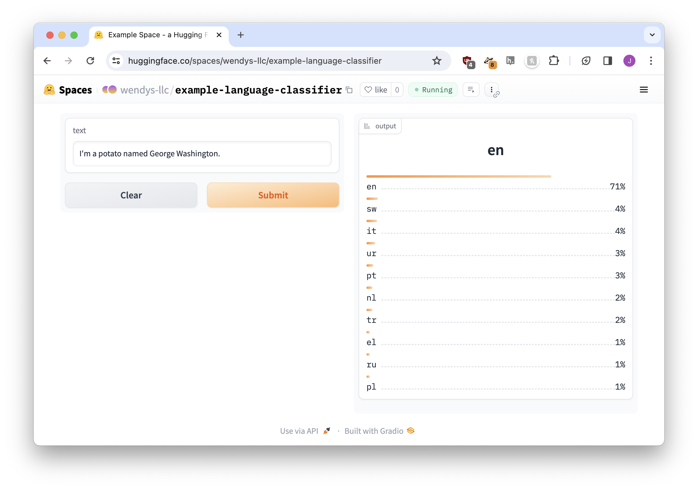
Perfect!
Exercise: Changing model input
Let’s try another model! Salesforce/blip-image-captioning-large is used for adding captions to images, which sounds like it could be a fun tool to experiment with.
Step 1: Find the pipeline snippet
After visiting the model page and scrolling around a bit, we suddenly realize there’s no pipeline snippet available!
There’s no need to worry, though: click the Use in Transformers button on the right-hand side of the page, near the top. It will provide you with some basic pipeline code.
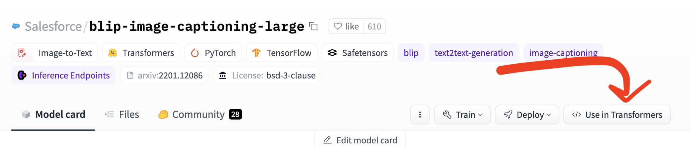
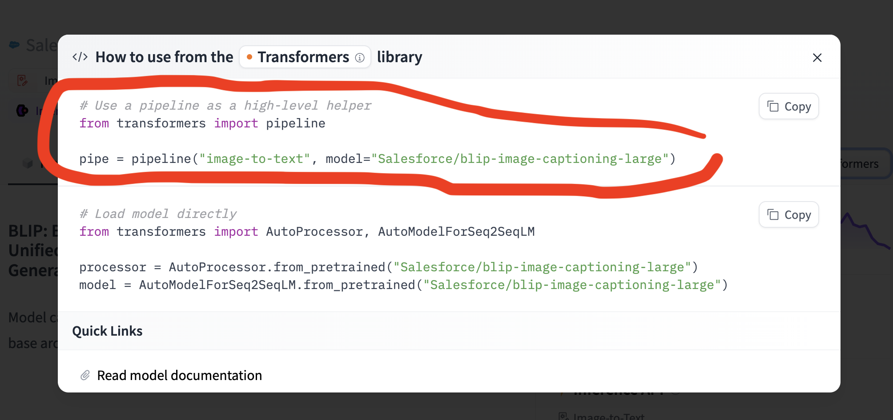
The reason why we like code from the page itself is that it usually gives us a little more detail. For example, the language detection one taught us about top_k as an option. But we aren’t picky, we’ll accept this!
Step 2: Build the base app
The big difference between this caption app and our categorization apps is that so far we’ve only accepted input in the form of text, not images. But if we look at the components page it isn’t long before we spot the image compnent
To spoil the surprise, we can’t just do inputs="image". The way that Gradio sends images makes the model angry, so we need to use a slightly different process.
import gradio as gr
from transformers import pipeline
# Use the blip model
pipe = pipeline("image-to-text", model="Salesforce/blip-image-captioning-large")
# Rename 'text' to 'image'
def do_action(image):
result = pipe(image)
return result
# input image, output text
# can't use inputs="image"
# instead use inputs=gr.Image(type='pil')
iface = gr.Interface(fn=do_action, inputs=gr.Image(type='pil'), outputs="text")
iface.launch()Up until this point we’ve only been using shortcuts for our components. When talking to an interface, every Gradio component has both a shortcut and a “real code” version. For example:
- “image” is a shortcut for
gr.Image() - “text” is a shortcut for
gr.Textbox() - “file” is a shortcut for
gr.File() - “slider” is a shortcut for
gr.Slider()
Because we need to give a little extra information to the image – “use the PIL format, not the default format” – we need to use gr.Image(type='pil') instead of just "image" (we’ll go deeper into customizing components in the next chapter).
Update the code and let it start up, and our app works like magic!
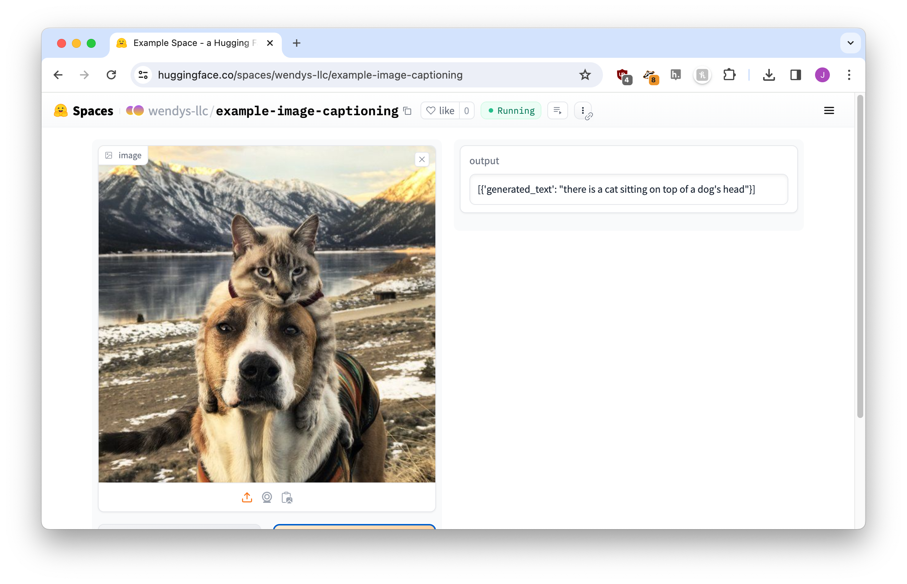
One final step and we’ll be good to go.
Step 3: Tweak the output
Right now the output is a little more Python-y than we’d like.
[{'generated_text': "there is a cat sitting on top of a dog's head"}]Just like we did earlier in this chapter when we cleaned up the bill classifier, we can change the code to only output a portion of this content. In this case it’s a list where the first element has a 'generated_text' key.
Let’s adjust our return line. You can always ask ChatGPT, but I know this one off the top of my head:
return result[0]['generated_text']Give it a save, wait a bit for the build, and here we go! A beautiful perfect app.
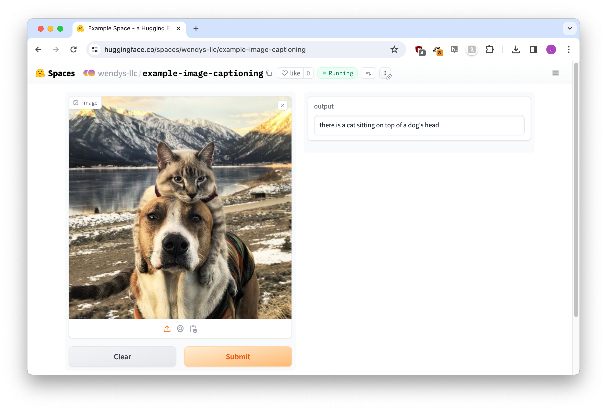
Reflection
In this chapter we took some first steps at customizing our AI demo apps.
While the last chapter yielded a mostly-functional demo, it had an unattractive Python output that our users wouldn’t enjoy. This chapter began by adjusting what was return-ed to the Gradio interface so our users only saw a “human-friendly” display.
Next, we explored other Gradio components outside of just text boxes. Scored categories and images were two of the ones we looked at, but there are a zillion more waiting for us!
Finally, we saw what might happen when we use other models instead of the very first one we started with. Even if the models all use pipeline, it turns out they might require different inputs and outputs. Most AI demo apps are going to need at least a little bit of tweaking before they’re ready for our audience!
In the next chapter we’ll continue to customize our application.
Footnotes
Yes, i only know this from reading the documentation↩︎